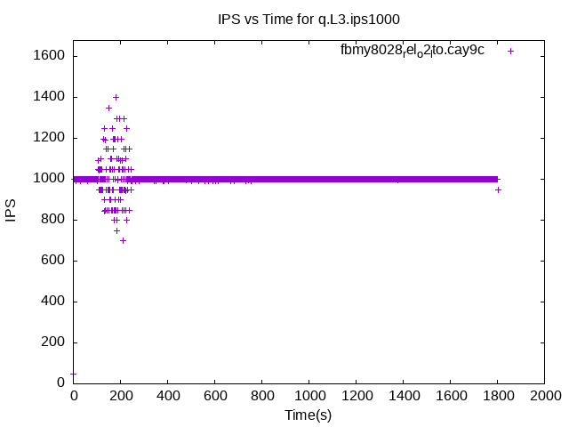

These have results per 1-second interval for: insert rate (IPS), max insert reponse time, query rate (QPS) and max query response time.
The results are from 1 client while the test may have N clients where N > 1.
The test is run with a rate limit for the number of inserts/s. In some cases the DBMS is unable to sustain that rate. When a DBMS can sustain that rate IPS will be a horizontal line.
Contents
- fbmy8028_rel_withdbg.cay9c: IPS, max insert response time, QPS and max query response time
- fbmy8028_rel.cay9c: IPS, max insert response time, QPS and max query response time
- fbmy8028_rel_o2.cay9c: IPS, max insert response time, QPS and max query response time
- fbmy8028_rel_native.cay9c: IPS, max insert response time, QPS and max query response time
- fbmy8028_rel_o2_lto.cay9c: IPS, max insert response time, QPS and max query response time
- fbmy8028_rel_lto.cay9c: IPS, max insert response time, QPS and max query response time
- fbmy8028_rel_native_lto.cay9c: IPS, max insert response time, QPS and max query response time
fbmy8028_rel_withdbg.cay9c: IPS
fbmy8028_rel_withdbg.cay9c
fbmy8028_rel_withdbg.cay9c: max insert response time
fbmy8028_rel_withdbg.cay9c
fbmy8028_rel_withdbg.cay9c: QPS
fbmy8028_rel_withdbg.cay9c
fbmy8028_rel_withdbg.cay9c: max query response time
fbmy8028_rel_withdbg.cay9c
fbmy8028_rel.cay9c: IPS
 fbmy8028_rel.cay9c
fbmy8028_rel.cay9c
fbmy8028_rel.cay9c: max insert response time
fbmy8028_rel.cay9c
fbmy8028_rel.cay9c: QPS
fbmy8028_rel.cay9c
fbmy8028_rel.cay9c: max query response time
 fbmy8028_rel.cay9c
fbmy8028_rel.cay9c
fbmy8028_rel_o2.cay9c: IPS
fbmy8028_rel_o2.cay9c
fbmy8028_rel_o2.cay9c: max insert response time
fbmy8028_rel_o2.cay9c
fbmy8028_rel_o2.cay9c: QPS
 fbmy8028_rel_o2.cay9c
fbmy8028_rel_o2.cay9c
fbmy8028_rel_o2.cay9c: max query response time
fbmy8028_rel_o2.cay9c
fbmy8028_rel_native.cay9c: IPS
fbmy8028_rel_native.cay9c
fbmy8028_rel_native.cay9c: max insert response time
fbmy8028_rel_native.cay9c
fbmy8028_rel_native.cay9c: QPS
fbmy8028_rel_native.cay9c
fbmy8028_rel_native.cay9c: max query response time
fbmy8028_rel_native.cay9c
fbmy8028_rel_o2_lto.cay9c: IPS
fbmy8028_rel_o2_lto.cay9c
fbmy8028_rel_o2_lto.cay9c: max insert response time
fbmy8028_rel_o2_lto.cay9c
fbmy8028_rel_o2_lto.cay9c: QPS
fbmy8028_rel_o2_lto.cay9c
fbmy8028_rel_o2_lto.cay9c: max query response time
fbmy8028_rel_o2_lto.cay9c
fbmy8028_rel_lto.cay9c: IPS
fbmy8028_rel_lto.cay9c
fbmy8028_rel_lto.cay9c: max insert response time
fbmy8028_rel_lto.cay9c
fbmy8028_rel_lto.cay9c: QPS
fbmy8028_rel_lto.cay9c
fbmy8028_rel_lto.cay9c: max query response time
 fbmy8028_rel_lto.cay9c
fbmy8028_rel_lto.cay9c
fbmy8028_rel_native_lto.cay9c: IPS
fbmy8028_rel_native_lto.cay9c
fbmy8028_rel_native_lto.cay9c: max insert response time
fbmy8028_rel_native_lto.cay9c
fbmy8028_rel_native_lto.cay9c: QPS
fbmy8028_rel_native_lto.cay9c
fbmy8028_rel_native_lto.cay9c: max query response time
fbmy8028_rel_native_lto.cay9c